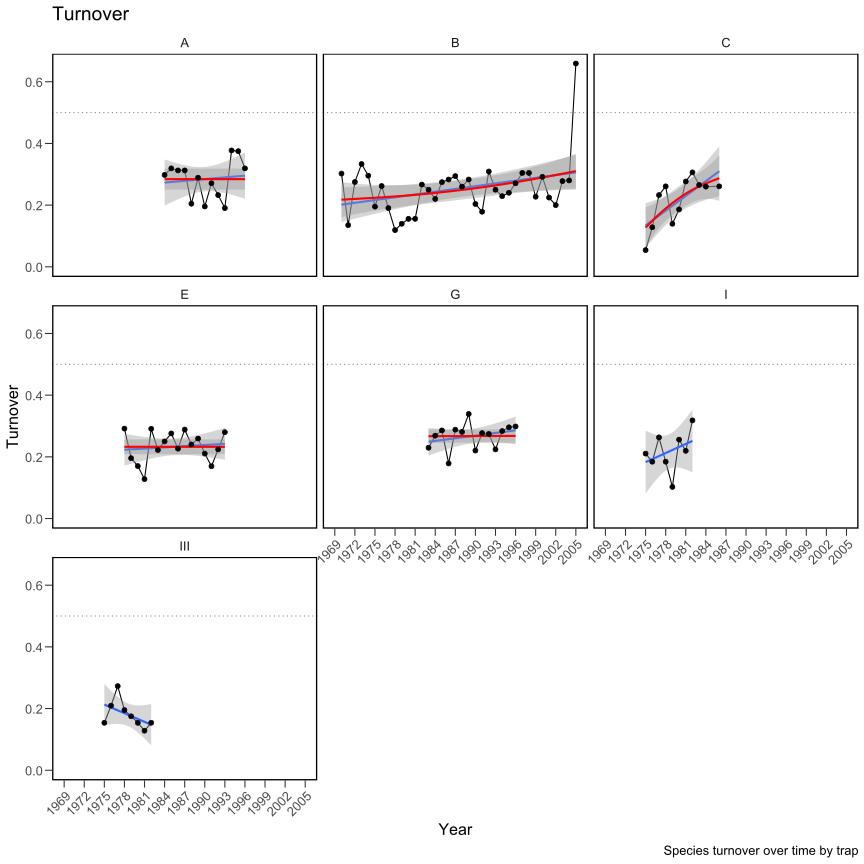
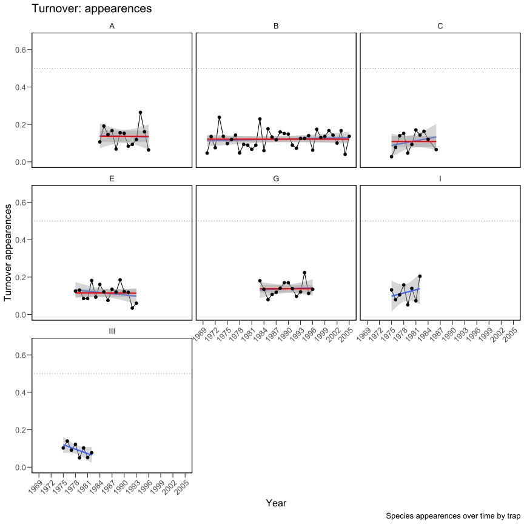
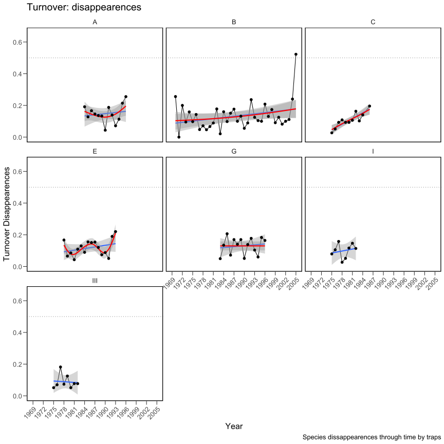
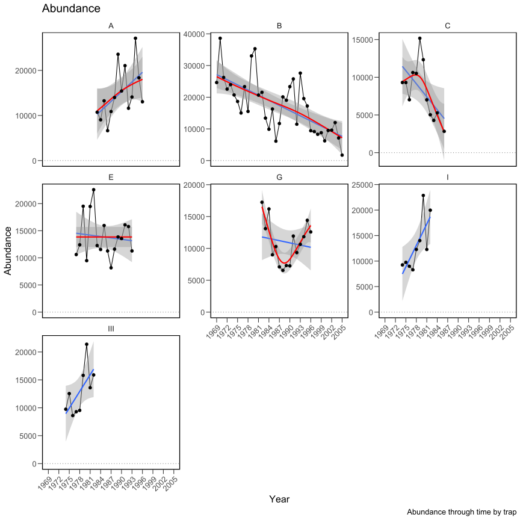
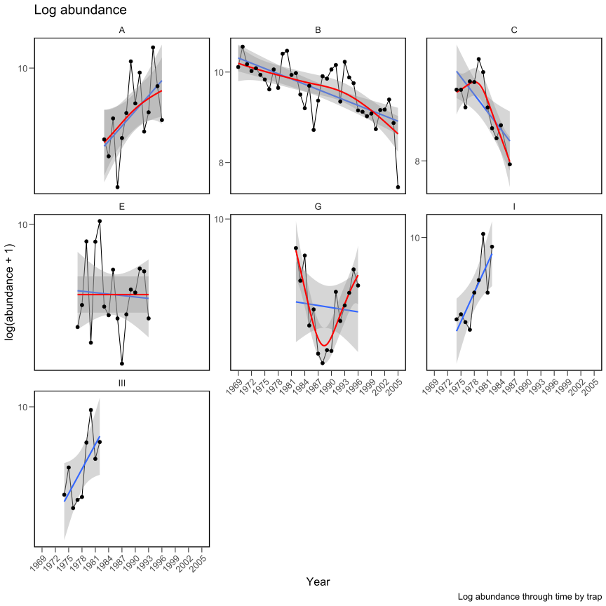
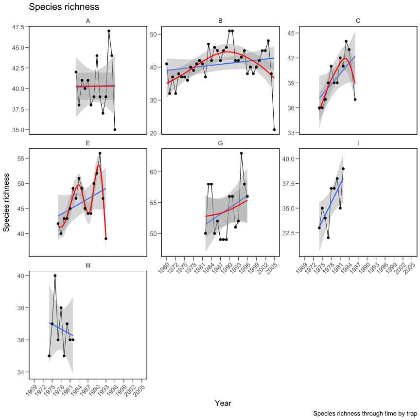
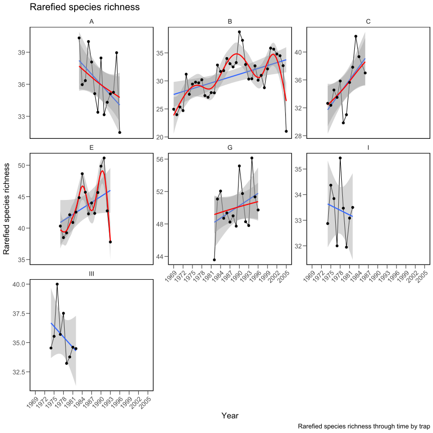
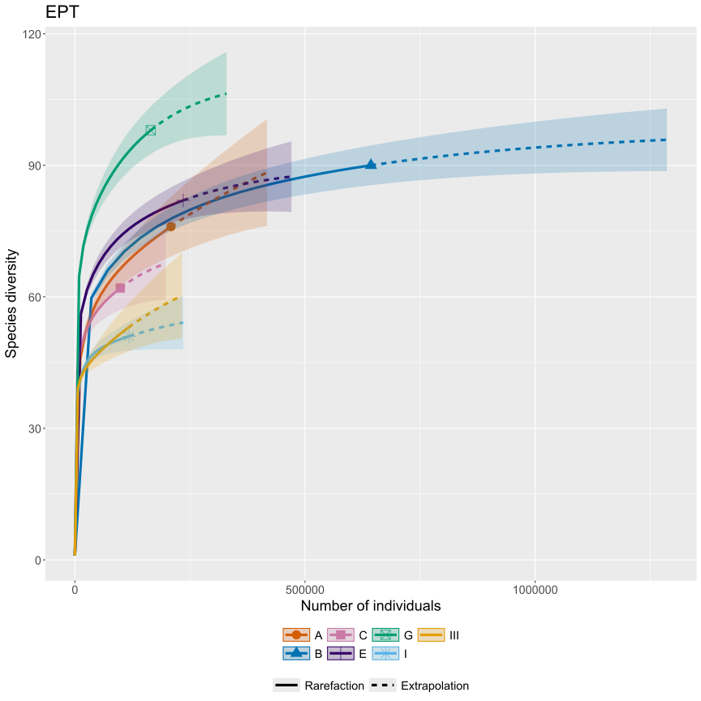
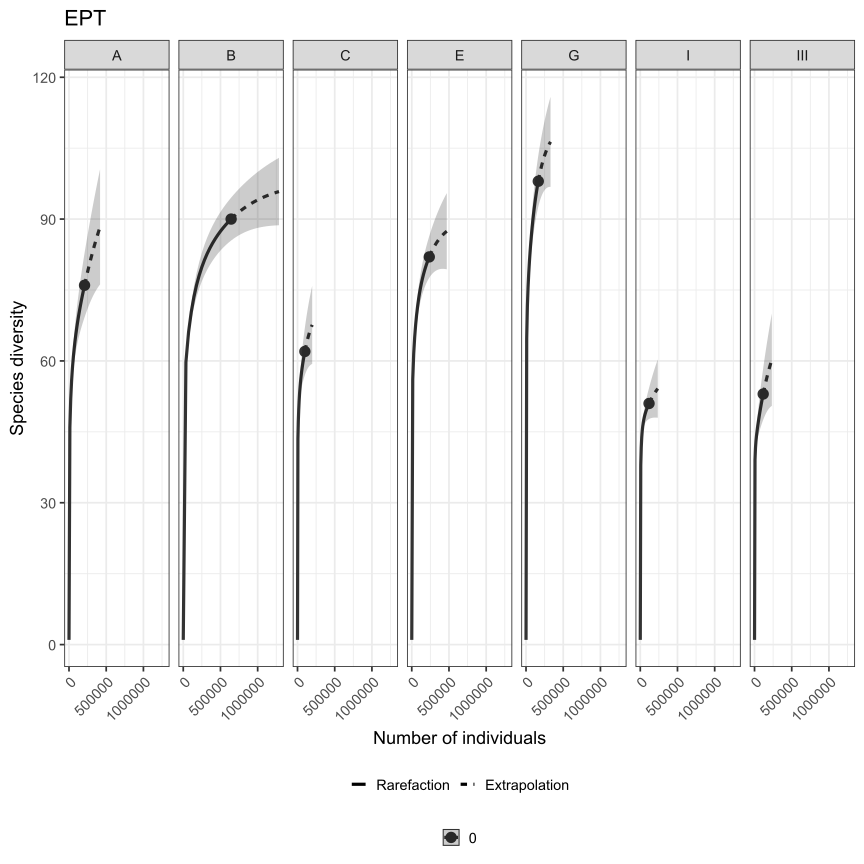

library(tidyverse)
library(patchwork)
library(janitor)
library(SpadeR)
library(vegan)
library(codyn)
library(mobr)
library(iNEXT)
library(readxl)
library(writexl)Breitenbach 2.0 - EPT
Load necessary packages
Load the EPT data
ept <- read_xlsx("Data/Breitenbach_community_data_17.12.2024.xlsx") |> # read in excel spreadsheet
as_tibble() |> # Make tibble table
clean_names() |> # Homogenize column names
rename_with(~ gsub("^x", "", .x), .cols = matches("^x[0-9]")) |> # Change column names
filter(!str_detect(original_name, "Summe")) |> # delete rows containing "summe"
filter(order %in% c("Ephemeroptera", "Plecoptera", "Trichoptera")) |> # Keeps only EPT taxa
select(where(~ !is.numeric(.x) || sum(.x) != 0)) |> # Removes empty (0) columns
mutate(trap_new = case_when( # Homogenize trap names
trap %in% c('Haus 0') ~ 'O',
trap %in% c('Haus A', 'A/I') ~ 'A',
trap %in% c('Haus I') ~ 'I',
trap %in% c('Haus B', 'B / II', 'B-II-X', 'B/II', 'Haus B/II') ~ 'B',
trap %in% c('Haus C-IV', 'C / IV', 'C-IV', 'C/IV', 'Haus C', 'Haus C/IV') ~ 'C',
trap %in% c('Haus III') ~ 'III',
trap %in% c('Haus D') ~ 'D',
trap %in% c('Haus E - V', 'E / V', 'E-V', 'E/V', 'Haus E/V') ~ 'E',
trap %in% c('Haus F - VI', 'F / VI', 'F-VI', 'F-VII', 'F/VI', 'Haus F/VI') ~ 'F',
trap %in% c('Haus G', 'G-VII', 'G/ VII', 'G/VII', 'Haus G/VII') ~ 'G',
trap %in% c('Quelle') ~ 'Source',
TRUE ~ trap)) |>
filter(!str_detect(trap_new, "D")) |> # delete rows for trap D (only sampled 1983)
select(-c(taxa_id:trap)) |> # Remove unnecessary columns
mutate(sp_name = validated_name, # Change column names
trap = trap_new, # Change column names
trap = factor(trap)) |> # make trap a factor
arrange(trap, family, sp_name) |> # Sort data
select(-c(validated_name, trap_new, order)) |> # Remove unnecessary columns
select(trap, sp_name, family, everything()) |> # rearrange columns
print()# A tibble: 2,133 × 40
trap sp_name family `1969` `1970` `1971` `1972` `1973` `1974` `1975` `1976`
<fct> <chr> <chr> <dbl> <dbl> <dbl> <dbl> <dbl> <dbl> <dbl> <dbl>
1 A Apatani… Apata… 0 0 0 0 0 0 0 0
2 A Apatani… Apata… 0 0 0 0 0 0 0 0
3 A Alainit… Baeti… 0 0 0 0 0 0 0 0
4 A Alainit… Baeti… 0 0 0 0 0 0 0 0
5 A Baetis … Baeti… 0 0 0 0 0 0 0 0
6 A Baetis … Baeti… 0 0 0 0 0 0 0 0
7 A Baetis … Baeti… 0 0 0 0 0 0 0 0
8 A Baetis … Baeti… 0 0 0 0 0 0 0 0
9 A Baetis … Baeti… 0 0 0 0 0 0 0 0
10 A Baetis … Baeti… 0 0 0 0 0 0 0 0
# ℹ 2,123 more rows
# ℹ 29 more variables: `1977` <dbl>, `1978` <dbl>, `1979` <dbl>, `1980` <dbl>,
# `1981` <dbl>, `1982` <dbl>, `1983` <dbl>, `1984` <dbl>, `1985` <dbl>,
# `1986` <dbl>, `1987` <dbl>, `1988` <dbl>, `1989` <dbl>, `1990` <dbl>,
# `1991` <dbl>, `1992` <dbl>, `1993` <dbl>, `1994` <dbl>, `1995` <dbl>,
# `1996` <dbl>, `1997` <dbl>, `1998` <dbl>, `1999` <dbl>, `2000` <dbl>,
# `2001` <dbl>, `2002` <dbl>, `2003` <dbl>, `2004` <dbl>, `2005` <dbl>Initial data wrangling
ept_clean <- ept |>
group_by(trap,
sp_name,
family) |> # Grouping by trap, sp_name, and family
summarise(across(where(is.numeric),
~sum(.x, na.rm = TRUE)),
.groups = "drop")
ept_long <- ept_clean |>
pivot_longer(
cols = starts_with("19") | starts_with("20"), # Specify the year column to pivot
names_to = "year", # Name column that will hold year values
values_to = "abundance") |> # Name column that will hold the counts
mutate(trap_code = paste(trap, year, sep = "_")) |> # create new column with trap_code (trap name + year)
mutate(year = as.numeric(year)) |> # make year variable numeric
filter(abundance != 0) |> # Remove rows where count is 0
arrange(trap, year) # Sort data
ept_agg <- ept_long |>
group_by(sp_name,
trap) |> # Group by sp_name and trap
summarise(abundance = sum(abundance),
.groups = "drop") |> # Summarise with the sum of "abundance"
arrange(trap) # Sort data
ept_wide <- ept_agg |>
pivot_wider(names_from = trap,
values_from = abundance,
values_fill = 0,
values_fn = sum) |>
arrange(sp_name) # Sort dataCalculating indices
Chao’s indices: species estimation in a single community
chaoA_ept <- ChaoSpecies(ept_wide$A ,"abundance", k = 2, conf = 0.95) # ept trap A
chaoB_ept <- ChaoSpecies(ept_wide$B ,"abundance", k = 2, conf = 0.95) # ept trap B
chaoC_ept <- ChaoSpecies(ept_wide$C ,"abundance", k = 2, conf = 0.95) # ept trap C
chaoE_ept <- ChaoSpecies(ept_wide$E ,"abundance", k = 2, conf = 0.95) # ept trap E
chaoF_ept <- ChaoSpecies(ept_wide$F ,"abundance", k = 2, conf = 0.95) # ept trap F
chaoG_ept <- ChaoSpecies(ept_wide$G ,"abundance", k = 2, conf = 0.95) # ept trap G
chaoI_ept <- ChaoSpecies(ept_wide$I ,"abundance", k = 2, conf = 0.95) # ept trap I
chaoIII_ept <- ChaoSpecies(ept_wide$III ,"abundance", k = 2, conf = 0.95) # ept trap III
chaoO_ept <- ChaoSpecies(ept_wide$O ,"abundance", k = 2, conf = 0.95) # ept trap OWarning: In this case, it can't estimate the variance of 2nd-order-jackknife estimation Standard community indices + turnover
ept_long$ro.ab <- round(ept_long$abundance, digits = 0) # Round abundance values to whole numbers for rarefaction analysis
TD <- NULL # Initialize empty data frame to store results
for (i in unique(ept_long$trap)) { # Loop through each unique trap in the dataset
sub <- ept_long[ept_long$trap == i, ] # Create subset for current trap and reshape data from long to wide format
sub_m <- sub |>
select(trap_code, sp_name, abundance) |>
pivot_wider(names_from = sp_name, values_from = abundance, values_fill = 0)
sub_ta <- sub_m[, -1] # Remove trap_code column for calculations
# Calculate diversity indices
SppRich <- specnumber(sub_ta) # Species richness (total number of species)
Simp <- diversity(sub_ta, index = "simpson") # Simpson's diversity (probability two random individuals are different species)
Shan <- diversity(sub_ta, index = "shannon") # Shannon's diversity (accounts for both abundance and evenness)
EvenJ <- Shan / log(SppRich) # Pielou's evenness (how close in numbers each species is)
E10 <- Shan / SppRich # Shannon's evenness (alternative evenness measure)
Abund <- rowSums(sub_ta) # Total abundance (sum of all individuals)
S_PIE <- calc_PIE(sub_ta, ENS = TRUE) # Effective number of common species
# Calculate species turnover metrics between years
DATA1_Turnover <- codyn::turnover(sub,
time.var = "year",
species.var = "sp_name",
abundance.var = "abundance",
replicate.var = NA,
metric = "total") # Total turnover (appearances + disappearances)
Turnover <- c("NA", DATA1_Turnover$total) # Add NA for first year
DATA1_Turnover_app <- codyn::turnover(sub, # Species appearances only
time.var = "year",
species.var = "sp_name",
abundance.var = "abundance",
replicate.var = NA,
metric = "appearance")
Turnover_app <- c("NA", DATA1_Turnover_app$appearance)
DATA1_Turnover_disapp <- codyn::turnover(sub, # Species disappearances only
time.var = "year",
species.var = "sp_name",
abundance.var = "abundance",
replicate.var = NA,
metric = "disappearance")
Turnover_disapp <- c("NA", DATA1_Turnover_disapp$disappearance)
# Prepare data for rarefaction analysis
sub_m_r <- sub |>
select(trap_code, sp_name, ro.ab) |>
pivot_wider(names_from = sp_name,
values_from = ro.ab,
values_fill = 0) # Create matrix with rounded abundances
sub_ta_r <- sub_m_r[, -1] # Remove trap_code column
# Calculate rarefied species richness
rare.SppRich <- if (min(rowSums(sub_ta_r)) > 10) {
rarefy(sub_ta_r, sample = min(rowSums(sub_ta_r)))
} else {
rarefy(sub_ta_r, sample = 10)
} # If minimum sample size > 10, use that; otherwise use 10 as minimum
# Combine all calculated metrics into a data frame
TD.i <- data.frame(sub_m$trap_code,
SppRich,
Simp,
Shan,
EvenJ,
E10,
Abund,
S_PIE,
Turnover,
Turnover_app,
Turnover_disapp,
rare.SppRich)
# Append results to main data frame
TD <- rbind(TD, TD.i)
# Clean up temporary variables to avoid conflicts in next iteration
rm(TD.i, sub_m, sub_ta, sub, SppRich, Simp, Shan, EvenJ, E10, Abund, S_PIE,
DATA1_Turnover, Turnover, DATA1_Turnover_app, Turnover_app,
DATA1_Turnover_disapp, Turnover_disapp, sub_m_r, sub_ta_r, rare.SppRich)
}
# Clean up dataframe
TD <- TD |>
as_tibble() |> # Convert to tibble format for better handling
rename(trap_code = sub_m.trap_code) |> # Fix column name from earlier processing
mutate(trap = gsub("_.*", "", trap_code), # Remove everything after _ to get trap ID
year = gsub(".*_", "", trap_code)) |> # Remove everything before _ to get year
mutate(across(-c(trap_code, trap), as.numeric)) |> # Convert columns to numeric format
select(trap_code, trap, year, everything()) |> # Reorder columns: trap_code, trap, year first, then rest
print()# A tibble: 117 × 14
trap_code trap year SppRich Simp Shan EvenJ E10 Abund S_PIE Turnover
<chr> <chr> <dbl> <dbl> <dbl> <dbl> <dbl> <dbl> <dbl> <dbl> <dbl>
1 A_1983 A 1983 42 0.866 2.43 0.650 0.0578 10727 7.45 NA
2 A_1984 A 1984 38 0.841 2.41 0.662 0.0634 9045 6.28 0.298
3 A_1985 A 1985 41 0.748 2.11 0.567 0.0514 13255 3.96 0.319
4 A_1986 A 1986 40 0.921 2.79 0.757 0.0698 6628 12.6 0.312
5 A_1987 A 1987 41 0.923 2.79 0.751 0.0680 10873 12.9 0.312
6 A_1988 A 1988 38 0.900 2.63 0.723 0.0692 13991 9.97 0.205
7 A_1989 A 1989 39 0.280 0.828 0.226 0.0212 23568 1.39 0.289
8 A_1990 A 1990 44 0.607 1.70 0.448 0.0385 15427 2.54 0.196
9 A_1991 A 1991 39 0.578 1.60 0.436 0.0410 21045 2.37 0.271
10 A_1992 A 1992 37 0.826 2.19 0.608 0.0593 11607 5.74 0.233
# ℹ 107 more rows
# ℹ 3 more variables: Turnover_app <dbl>, Turnover_disapp <dbl>,
# rare.SppRich <dbl>Plotting
Define plotting parameters
My_theme <- theme(panel.background = element_blank(),
panel.border = element_rect(fill = NA, linewidth = 1.25),
strip.background = element_rect(fill = "white",
color = "white", linewidth = 1.25),
legend.position = "bottom",
text = element_text(size = 16))Turnover (total) by trap by year
ggplot(TD |>
group_by(trap) |>
filter(n() > 3),
aes(x = year, y = Turnover)) +
geom_line() +
geom_smooth(method = "lm") +
geom_smooth(method = "gam", col = "red") +
geom_point(size = 2) +
geom_hline(yintercept = 0.5,
linetype = "dotted",
color = "grey50",
size = 0.5) +
facet_wrap(~trap) +
scale_x_continuous(breaks = seq(min(TD$year), max(TD$year), by = 3)) +
scale_y_continuous(limits = c(0, max(TD$Turnover, na.rm = TRUE))) +
labs(title = "Turnover",
x = "Year",
y = "Turnover",
caption = "Species turnover over time by trap") +
My_theme +
My_theme +
theme(axis.text.x = element_text(angle = 45, hjust = 1),
axis.ticks.length = unit(0.25, "cm"))
Turnover (appearances) by trap by year
ggplot(TD |>
group_by(trap) |>
filter(n() > 3),
aes(x = year, y = Turnover_app)) +
geom_line() +
geom_smooth(method = "lm") +
geom_smooth(method = "gam", col = "red") +
geom_point(size = 2) +
geom_hline(yintercept = 0.5,
linetype = "dotted",
color = "grey50",
size = 0.5) +
facet_wrap(~trap) +
scale_x_continuous(breaks = seq(min(TD$year), max(TD$year), by = 3)) +
scale_y_continuous(limits = c(0, max(TD$Turnover, na.rm = TRUE))) +
labs(title = "Turnover: appearences",
x = "Year",
y = "Turnover appearences",
caption = "Species appearences over time by trap") +
My_theme +
My_theme +
theme(axis.text.x = element_text(angle = 45, hjust = 1),
axis.ticks.length = unit(0.25, "cm"))
Turnover (disappearances) by trap by year
ggplot(TD |>
group_by(trap) |>
filter(n() > 3),
aes(x = year, y = Turnover_disapp)) +
geom_line() +
geom_smooth(method = "lm") +
geom_smooth(method = "gam", col = "red") +
geom_point(size = 2) +
geom_hline(yintercept = 0.5,
linetype = "dotted",
color = "grey50",
size = 0.5) +
facet_wrap(~trap) +
scale_x_continuous(breaks = seq(min(TD$year), max(TD$year), by = 3),
minor_breaks = seq(min(TD$year), max(TD$year), by = 1)) +
scale_y_continuous(limits = c(0, max(TD$Turnover, na.rm = TRUE))) +
labs(title = "Turnover: disappearences",
x = "Year",
y = "Turnover Disappearences",
caption = "Species dissappearences through time by traps") +
My_theme +
My_theme +
theme(axis.text.x = element_text(angle = 45, hjust = 1),
axis.ticks.length = unit(0.25, "cm"))
Abundance by trap by year
ggplot(TD |>
group_by(trap) |>
filter(n() > 3),
aes(x = year, y = Abund)) +
geom_line() +
geom_smooth(method = "lm") +
geom_smooth(method = "gam", col = "red") +
geom_point(size = 2) +
geom_hline(yintercept = 0.5,
linetype = "dotted",
color = "grey50",
size = 0.5) +
facet_wrap(~trap, scales = "free_y") +
scale_x_continuous(breaks = seq(min(TD$year), max(TD$year), by = 3)) +
labs(title = "Abundance",
x = "Year",
y = "Abundance",
caption = "Abundance through time by trap") +
My_theme +
theme(axis.text.x = element_text(angle = 45, hjust = 1),
axis.ticks.length = unit(0.25, "cm")) 
Log abundance (log10 + 1) by trap by year
ggplot(TD |>
group_by(trap) |>
filter(n() > 3),
aes(x = year, y = log(Abund + 1))) +
geom_line() +
geom_smooth(method = "lm") +
geom_smooth(method = "gam", col = "red") +
geom_point(size = 2) +
# geom_hline(yintercept = 0.5,
# linetype = "dotted",
# color = "grey50",
# size = 0.5) +
facet_wrap(~trap, scales = "free_y") +
scale_y_continuous(breaks = seq(min(0), max(10), by = 2)) +
scale_x_continuous(breaks = seq(min(TD$year), max(TD$year), by = 3)) +
labs(title = "Log abundance",
x = "Year",
y = "log(abundance + 1)",
caption = "Log abundance through time by trap") +
My_theme +
theme(axis.text.x = element_text(angle = 45, hjust = 1),
axis.ticks.length = unit(0.25, "cm")) 
Species richness by trap by year
ggplot(TD |>
group_by(trap) |>
filter(n() > 3),
aes(x = year, y = SppRich)) +
geom_line() +
geom_smooth(method = "lm") +
geom_smooth(method = "gam", col = "red") +
geom_point(size = 2) +
# geom_hline(yintercept = 0.5,
# linetype = "dotted",
# color = "grey50",
# size = 0.5) +
facet_wrap(~trap, scales = "free_y") +
scale_x_continuous(breaks = seq(min(TD$year), max(TD$year), by = 3)) +
labs(title = "Species richness",
x = "Year",
y = "Species richness",
caption = "Species richness through time by trap") +
My_theme +
theme(axis.text.x = element_text(angle = 45, hjust = 1),
axis.ticks.length = unit(0.25, "cm")) 
(Individual-based) rarefied species richness by trap by year
ggplot(TD |>
group_by(trap) |>
filter(n() > 3),
aes(x = year, y = rare.SppRich)) +
geom_line() +
geom_smooth(method = "lm") +
geom_smooth(method = "gam", col = "red") +
geom_point(size = 2) +
# geom_hline(yintercept = 0.5,
# linetype = "dotted",
# color = "grey50",
# size = 0.5) +
facet_wrap(~trap, scales = "free_y") +
scale_x_continuous(breaks = seq(min(TD$year), max(TD$year), by = 3)) +
labs(title = "Rarefied species richness",
x = "Year",
y = "Rarefied species richness",
caption = "Rarefied species richness through time by trap") +
My_theme +
theme(axis.text.x = element_text(angle = 45, hjust = 1),
axis.ticks.length = unit(0.25, "cm")) 
Rarefaction accumulation curves
Calculation of rarefaction curves
# ept_wide_red <- ept_wide |>
# select(-O, -F) |>
# column_to_rownames(var = "sp_name") |>
# data.frame() |>
# print() # remove traps with lower quality data: Trap D, F, & Quelle
# ept_cum.rare = iNEXT(ept_wide_red, q = 0, datatype = "abundance") # calculate accumulation curves
# write_rds(ept_cum.rare, "Outputs/rarefaction_ept.rds") # save output for quicker loading next time
ept_cum.rare <- readRDS("Outputs/rarefaction_ept.rds") # load saved outputCheck outputs
Basic information
ept_cum.rare$DataInfo Assemblage n S.obs SC f1 f2 f3 f4 f5 f6 f7 f8 f9 f10
1 A 208785 76 0.9999 15 3 4 2 1 1 2 0 2 1
2 B 643183 90 1.0000 10 6 4 2 4 3 1 1 2 0
3 C 98689 62 0.9999 8 3 1 0 3 3 1 1 0 1
4 E 235327 82 1.0000 9 5 3 4 3 0 1 0 1 2
5 G 164752 98 0.9999 14 8 4 3 0 0 1 1 1 3
6 I 117690 51 1.0000 4 1 2 0 2 0 1 0 2 1
7 III 116367 53 0.9999 9 2 1 0 0 0 0 0 1 0Asymptotic diversity estimates.
ept_cum.rare$AsyEst Assemblage Diversity Observed Estimator s.e. LCL
1 A Species richness 76.000000 113.499820 32.38616209 76.000000
2 A Shannon diversity 10.405706 10.408437 0.03385415 10.342084
3 A Simpson diversity 4.672479 4.672561 0.01883733 4.635641
4 B Species richness 90.000000 98.333320 15.28568549 90.000000
5 B Shannon diversity 13.911444 13.912549 0.02211145 13.869212
6 B Simpson diversity 8.665258 8.665362 0.01815118 8.629786
7 C Species richness 62.000000 72.666559 11.02675067 62.000000
8 C Shannon diversity 11.487524 11.491853 0.04148104 11.410551
9 C Simpson diversity 6.843397 6.843803 0.02882696 6.787303
10 E Species richness 82.000000 90.099966 15.85769142 82.000000
11 E Shannon diversity 14.329372 14.332216 0.03172515 14.270035
12 E Simpson diversity 8.771143 8.771433 0.02273724 8.726869
13 G Species richness 98.000000 110.249926 11.36512898 98.000000
14 G Shannon diversity 16.870192 16.876113 0.03774784 16.802129
15 G Simpson diversity 11.352314 11.353027 0.02601256 11.302043
16 I Species richness 51.000000 58.999932 7.64742890 51.000000
17 I Shannon diversity 7.898695 7.900656 0.02933911 7.843153
18 I Simpson diversity 4.698134 4.698282 0.01506555 4.668754
19 III Species richness 53.000000 73.249826 18.18244064 53.000000
20 III Shannon diversity 10.343251 10.346428 0.03796313 10.272022
21 III Simpson diversity 6.147374 6.147646 0.02672641 6.095263
UCL
1 176.975532
2 10.474790
3 4.709482
4 128.292713
5 13.955887
6 8.700937
7 94.278593
8 11.573154
9 6.900302
10 121.180470
11 14.394396
12 8.815997
13 132.525169
14 16.950098
15 11.404011
16 73.988617
17 7.958160
18 4.727810
19 108.886755
20 10.420834
21 6.200028Plotting
Plotting parameters
My_theme <- theme(panel.background = element_blank(),
panel.border = element_rect(fill = NA, linewidth = 1.25),
strip.background = element_rect(fill = "white",
color = "white", linewidth = 1.25),
legend.position = "right",
text = element_text(size = 16),
axis.text.x = element_text(angle = 45, hjust = 1))All accumulation curves in one plot
options(scipen = 999) # Increase penalty to avoid scientific notation
ept_p <- ggiNEXT(ept_cum.rare, type = 1, color.var = "Assemblage")
ept_p <- ept_p + ggtitle("EPT")
ept_p <- ept_p + theme(legend.position = "bottom")
ept_p
Accumulation curves in separate plots
options(scipen = 999) # Increase penalty to avoid scientific notation
ept_p1 <- ggiNEXT(ept_cum.rare, facet.var = "Assemblage", grey = T)
ept_p1 <- ept_p1 + ggtitle("EPT")
ept_p1 <- ept_p1 + theme(axis.text.x = element_text(angle = 45, hjust = 1), legend.position = "bottom")
ept_p1